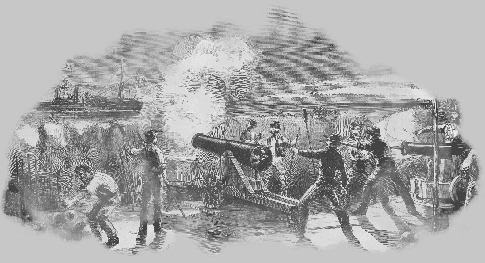
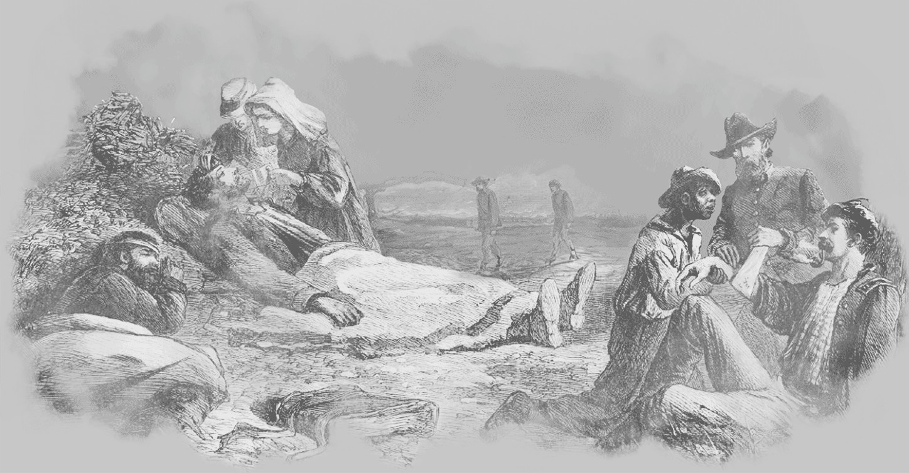

Občanská válka, Válka Severu proti Jihu, Secesionistická válka nebo poslední dobou v USA používaný ale trochu zavádějící název "War Between the States" neboli Válka mezi státy. Existuje více pojmenování pro jednu z nejvýznamnějších a zároveň nejtragičtějších událostí amerických dějin.
Největší a nejkrvavější válečný konflikt na území Spojených států i celém severoamerickém kontinentu byl zaplacen životy více jak 630 000 lidí. V historii USA to znamená, že v letech 1861-65 zahynulo dohromady procentuálně více američanů, než ve všech ostatních válkách s americkou účastí (I. a II. světová válka, Korea, Vietnam, Záliv...). Označení "bratrovražedná válka" v tomto případě nabylo opravdu nebývalých rozměrů. V mnoha případech proti sobě na válečném poli stáli přátelé nebo dokonce příbuzní. Bojovali proti sobě příslušníci jednoho národa a proto často docházelo i k sbližování vojáků obou stran na liniích, kde byl zrovna klid a třeba i směňování potravin, tabáku a výstroje.
Od začátku zřetelně slabší Jih čelil početní i materiální přesile. Té odolával se ctí a na bojištích se projevovala zkušenost skvělých velitelů a motivace. Vojáci Konfederace byli odhodláni bránit svoje domovy proti agresorovi. Federální vojáci už tak jasno neměli. Ze začátku se nechali naverbovat možná kvůli dobrodružství nebo slávě ale valná část jich po vypršení několikaměsíční služby odcházela z armády. Kvůli zachování Unie jich ve skutečnosti bylo ochotných nechat se zabít jen málo, natož pak kvůli nějaké svobodě "negrů".

Jakkoliv je bezesporu každá válka od základu špatná, tato byla specifická tím, že sice způsobila mnoho neštěstí, velké množství obětí a zdecimovala obrovská území, přesto poměrně kladně ovlivnila USA, jak je známe dnes. Během těch několika bouřlivých let občanské války došlo k prudkému rozvoji ve všech oblastech a americké státy se rychle vyrovnaly těm evropským. Národ získal dodnes uctívané osobnosti jako je Lee, Jackson, Grant, Davis nebo Lincoln.
Konflikt mezi Severem a Jihem je považován za první moderní válku. Byla například jako jedna z prvních fotograficky zdokumentována. Objevily se opakovací pušky, telegraf, pozorovací balony, ponorky, pancéřové lodě, zákopy, ostnatý drát a dokonce rakety. A s novými vynálezy přicházejí i zásadní změny ve válečné taktice.
| Počet mužů sloužících v armádě Unie | 2 772 408 |
| Počet mužů sloužících v armádě Konfederace | okolo 1 300 000 |
| Padlých vojáků Unie | 359 528 |
| Padlých vojáků Konfederace | okolo 258 000 |
| Raněných vojáků Unie | 275 175 |
| Raněných vojáků Konfederace | okolo 225 000 |
| Mrtvých a raněných v armádě Unie | 41 % |
| Mrtvých a raněných v armádě Konfederace | 56 % |
| Padlých černochů, sloužících v obou armádách | okolo 37 300 |
| Průměrný věk vojáka občanské války | 24 let |
| Nejstarší voják | 80 let ze státu Iowa |
| Nejmladší voják | 11 let z Alabamy |
| Unií vynaložené prostředky na vedení války | okolo 3 bilionů dolarů |
| Průměrná denní mzda za nekvalifikovanou práci | 1 dolar |

Nejčastějším chirurgickým zákrokem na bojištích Americké občanské války byla amputace. Chirurgové jich provedli přibližně 60 000. V té době dosud nebyl dobře prozkoumán vliv bakterií na šíření infekcí, což značně limitovalo možnosti vojenské medicíny. Střely typu Minié z tehdejších pušek způsobovaly těžká poranění kostí a měkkých tkání a jejich léčba byla velice obtížná. Zasažená končetina tak byla vlastně docela výhra, protože se dala amputovat. To byla většinou jediná možnost, jak zachránit život raněného. Navzdory rozšířeným mýtům byly zákroky běžně prováděny v anestezii, nejčastěji za použití chloroformu nebo éteru.
Největším problémem však nebyla samotná zranění z boje, ale nemoci. Nejprve přišly epidemie dětských nemocí jako jsou plané neštovice, příušnice, černý kašel a zejména spalničky. To byl následek nakumulování velkého množství rekrutů z různých oblastí a sociálních skupin ve výcvikových táborech. Úplavice, tyfus, zápal plic či malárie si vyžádaly více obětí než kulky a dělostřelecké granáty. Hygiena v táborech byla mizerná, zejména na začátku války, kdy si muži teprve zvykali na život v polních podmínkách. Drsné počasí, špatná voda, nedostatečné přístřeší a špinavé táborové nemocnice si vybraly svou daň.
Významným pokrokem bylo zavedení organizovaného systému evakuace raněných, polních ošetřoven, sanitních vozů a nemocnic, který se stal předchůdcem moderní vojenské zdravotní služby.